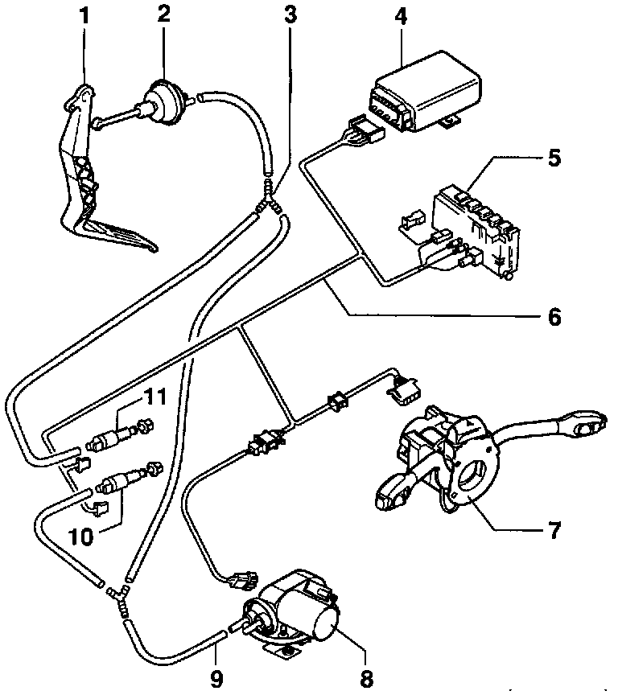

Exploded Views

1- Accelerator Pedal (AP)
2- Throttle control element
3- T-connector
4- Cruise control, control module -J213-
5- Relay panel
6- Wiring harness
7- Cruise control switch -E45-
8- Cruise control vacuum pump -V18-
9- Vacuum hose
10- Clutch vacuum vent valve switch -F36-
- With cruise control clutch pedal position switch
- Vehicles with manual transmission only
11- Brake vacuum vent valve switch -F47-